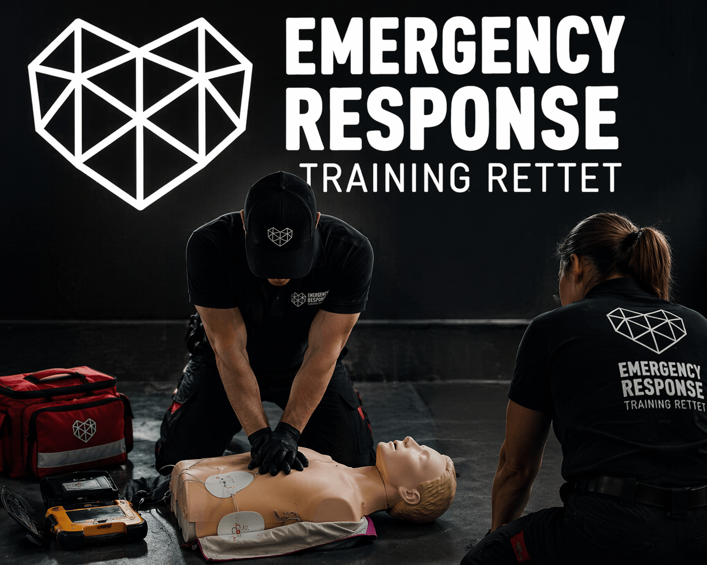

Über Uns
Bei Emergency Response Training Rettet dreht sich alles darum, dich
optimal auf Notfallsituationen vorzubereiten. Wir zeigen dir, wie du
in kritischen Momenten ruhig bleibst und richtig handelst – denn im
Ernstfall zählt jede Sekunde.
Wir sind ein Team von ausgebildeten Instruktorinnen und Instruktoren
mit fundierter Praxiserfahrung aus dem Berufsalltag. Genau dieses
Wissen geben wir in unseren Trainings weiter: realitätsnah,
verständlich und direkt anwendbar.
Unsere Kurse verbinden aktuelles Fachwissen mit praxisorientierten
Übungen, damit du nicht nur weisst, was zu tun ist, sondern auch die
Sicherheit hast, es wirklich umzusetzen.
Unser Ziel ist klar: Training rettet Leben
